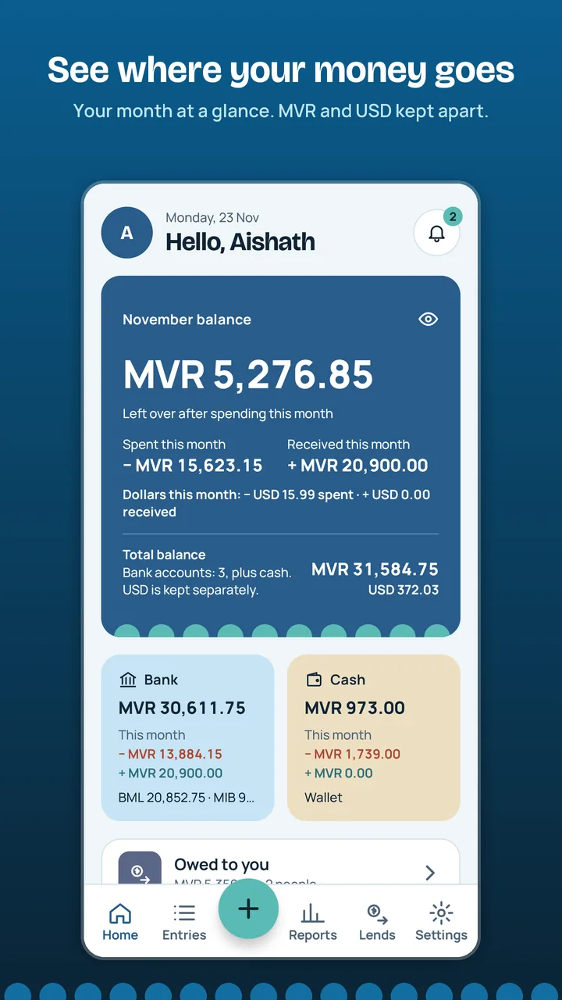
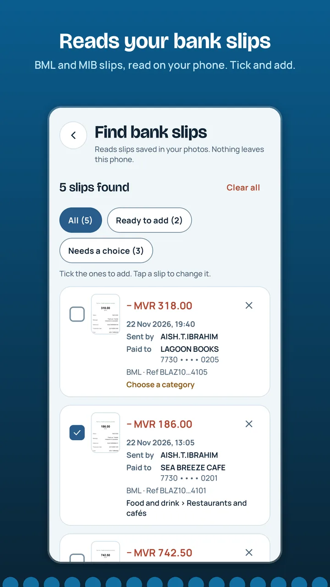

Guides
1. Set up your accounts
Mageywallet keeps a balance for each of your bank accounts and your cash. Add each account once.


- Open Settings › Accounts › Add account.
- Choose Bank account or Cash wallet. For a bank account, choose BML, MIB or Other.
- Choose MVR or USD and type the Balance today, as your bank app shows it right now.
- Under How this account appears on slips and SMS, add the Account number and Your name on slips as the bank prints it (for example BML writes AISH.T.IBRAHIM, MIB writes Aishath Test Ibrahim). This is how the app tells which side of a slip is you.
- Quicker: tap Fill in from a bank slip and pick any slip. The app reads the bank, your name and the account number.
- Tap Save account.
The balance you type is true as of now. Older slips or statement lines you add later are kept as history and do not change it.
2. Add spending from bank slips
Mageywallet reads BML and MIB transfer and bill slips saved in your photos, on your phone.


- Open Settings › Find bank slips. (Or tap Find the bank slip in Add entry.)
- Allow Mageywallet to see your photos when asked.
- Under Where to look, switch on the albums your slips are saved in, such as WhatsApp, Viber, Screenshots, Downloads or Pictures.
- Choose How far back?, then tap Find slips.
- Each slip found is shown with its amount, date and who it was paid to. Tap a slip to change it: Spent, Received or Moved, the category, and which of your accounts.
- Tick the slips you want, then tap Add. Or open one slip and tap OK, add this slip.
On a slip you can also choose Money I lent, Money I borrowed or For someone else instead of a category.
The Google Play version never asks for photo access: in Find bank slips tap Choose slips and pick your slips, or share a slip into Mageywallet. Steps 2 to 4 above are for the version installed directly.
No photo access? Use Choose slips myself and pick up to 100 photos, or share a slip into Mageywallet from WhatsApp, Viber or your bank app.
Switch on Keep finding new slips and new slips are read each time you open the app.
3. Let known slips add themselves
Once you have sorted a slip from a shop or person, their next slips can go to the same category without asking.
- Open Settings and switch on Add known slips by themselves.
- Sort and add one slip from that shop or person, with its category.
- Their next slips are added by themselves, and each shows in Notifications › Slips added. Tap Change to change the category, or Undo to take it out and send the slip back to Find bank slips.
Some slips are always left for you to check: a shop not sorted before, a shop with two categories, a slip where the account is a guess, someone with an open loan or money held for them, a likely second copy of a slip, a slip whose date could not be read, or a slip showing two different amounts. The slip says why.
4. Remove a slip, or bring one back
- To remove a slip from Find bank slips, tap its ✕, or open it and tap Not a payment, remove. Confirm with Remove.
- To bring it back, scroll to the bottom of Find bank slips and tap Removed slips.
- Tap Restore. The photo is read again at once: if its shop is known it is added by itself, otherwise it goes back to the list for you to sort.
A slip whose entry you deleted also appears in Removed slips.
5. Add an entry by hand
For cash, or anything without a slip.
- Tap the + button at the bottom.
- Choose Spent, Received or Moved (between your own accounts, such as taking cash out).
- Type the amount on the keypad.
- Choose the account it was Paid from (or Received into, or Moved from and Move to).
- Pick a Category, and a kind of it if you like (for example Food and drink › Takeaway).
- Optionally type who it was paid to, change the date, then tap Save.
To change or delete an entry later, tap it in Entries.
6. Move money between rufiyaa and dollars
Mageywallet never converts between MVR and USD. When money moves between a rufiyaa account and a dollar account, you type both sides.
- Tap + and choose Moved.
- Type the amount that left, and choose the account it left from.
- Under Move to, choose the account in the other currency.
- A field Arrived in … appears. Type what arrived, as your bank shows it, then tap Save.
The same field appears when a slip or a statement line is a move to your account in the other currency.
7. Check with a bank statement
Compare a BML statement with what is in Mageywallet, and add anything missing in one go. The file is read on your phone and not kept.
- In the BML app or BML Internet Banking, download an account's history as CSV or Excel (XLS or XLSX). A PDF cannot be read.
- In Mageywallet open Settings › Check with a statement › Choose statement file, and pick the file.
- If asked, choose which account it is for. If the wrong one was chosen, tap Not this account?.
- The balance card compares the bank's balance with Mageywallet's. Three tabs show the lines: Missing (on the statement, not in the app), In both, and Only in app.
- In Missing, tap a line to say What was this?: Spending (or Money I received), Paid for someone else, or Moved to my other account. Then pick the category, the person, or the other account, and tap Done.
- Tick the lines to add and tap Add. Added entries are marked "From statement". Tap Undo if you change your mind.
Statements that overlap are fine: lines already added from a slip or an earlier statement are found by their bank reference and not offered again.
8. Correct a balance
If an account in Mageywallet shows a different balance from your bank app or wallet:
- Open Settings › Accounts.
- Tap Correct balance under the account.
- Type the balance your bank app or wallet actually shows, and save.
Your past entries stay as they are. The difference is kept as a correction, and older entries you add later do not change the corrected balance.
9. Money you lent
Money you lend is still yours: it is not counted as spending.

- Open Lends at the bottom, choose I lent, then tap Lend money. (Or choose Money I lent on a bank slip.)
- Type the person's name, the amount and the account it came from. Pick a pay-back date if there is one; you get a reminder that morning.
- When they pay you back, open the person and tap Paid back. A slip of money from them is offered as paying back too.
- To nudge them, tap Remind. It opens Viber, WhatsApp or SMS with a short, polite message that you send yourself.
- If they will never pay the rest, tap Forgive the rest. Only then does it count as spending.
10. Money you borrowed
Borrowing is not income, and paying it back is not spending.
- Open Lends, choose I borrowed, then tap I borrowed money. (Or choose Money I borrowed on a slip.)
- Type who you borrowed from, the amount and the account it went into. Pick a pay-back date to be reminded.
- When you pay some back, open the person and tap Pay back. A slip of money paid to them is offered as paying back.
11. Money for others
When someone gives you money to pay something for them (rent for the in-laws, school fees for a brother), it passes through your account but is not yours. Mageywallet keeps it out of your income and spending.
- Open Settings › Money for others.
- Tap Got money for… when money comes in for them, or Paid for… when you pay for them. Choose the person or purpose, the amount and the account.
- On a bank slip or a statement line, choose For someone else instead.
- Already saved as income or spending? Open the entry and tap Not my money: for someone else.
Home shows how much of your balance you are holding for others.
12. See where your money goes

- Home shows this month: what is left over, spent and received, your total balance, and bank and cash.
- Open Reports for spending or income by category. Use the arrows to change month, and MVR or USD to switch currency.
- Tap a category to see each payment in it, by kind, and how it compares with last month.
13. Categories, shops and people
- Settings › Categories: rename a category, add one, or add kinds under it (for example Food and drink › Takeaway).
- Settings › Shops and people: each shop or person you have sorted keeps its categories. Change them, tap Make usual on the one their slips should get, or Forget this shop so its next slip is asked about again.
A shop with two or more categories is never added by itself: you pick for each slip, with the usual one first.
14. Find an entry

- Open Entries.
- Tap the search button to search by payee, note, amount or bank reference. A person's name finds money lent, borrowed or held for them too.
- Use the filters: Date, Category, Amount, Account, Type and Added from (slip, statement or typed in).
- Tap an entry to change or delete it. An entry from a slip or a statement shows where it came from and its bank reference, with a button to copy it.
15. Language, theme and hiding amounts
- Settings › Language: English or Dhivehi.
- Settings › Theme: Day, Night, or Same as phone.
- On Home, tap the eye to hide amounts on screen, and again to show them.
Everything stays on your phone. Mageywallet has no internet access and is never backed up online. See the privacy policy.
Still stuck? See Support.